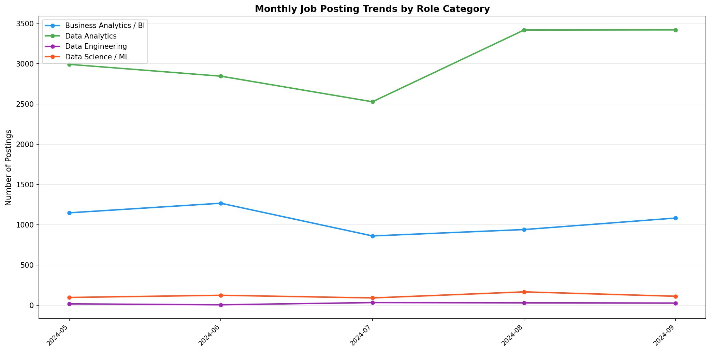
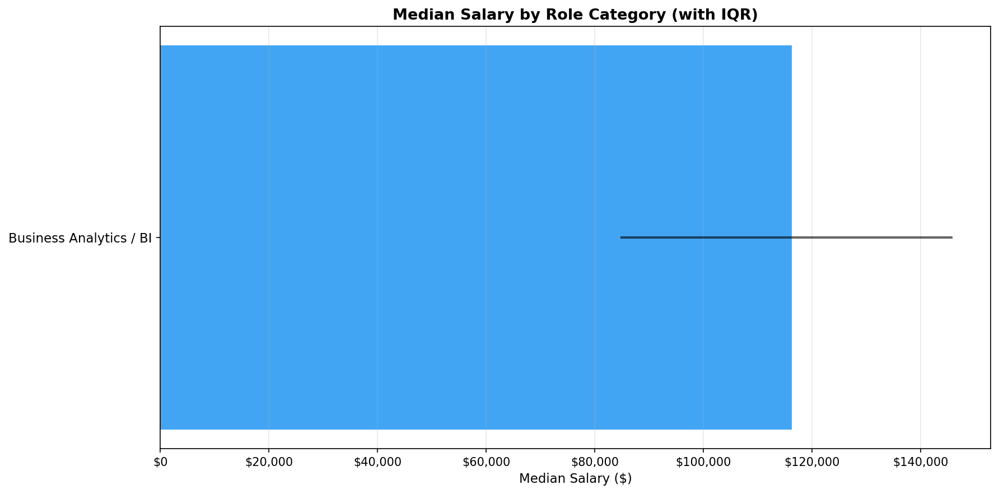
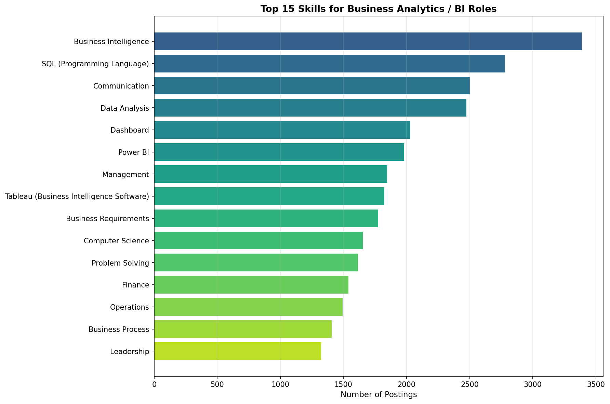
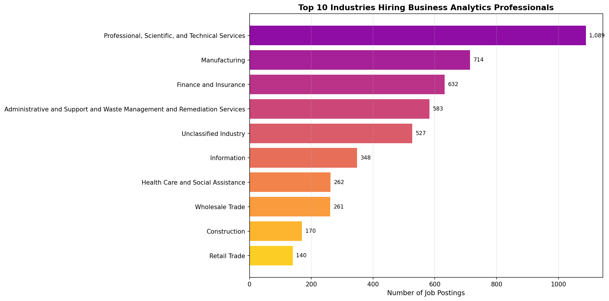

What Is the Career Outlook for Business Analytics Professionals?
Author
Omar Mohd Haris
Published
April 21, 2026
Introduction
Business analytics has emerged as one of the fastest-growing professional fields, driven by organizations’ increasing reliance on data-driven decision-making. Radovilsky et al. (2018) conducted a comparative analysis of over 1,000 job postings and found that business analytics roles emphasize statistical analysis, decision-making support, and data management — a distinct profile from data science roles, which lean more heavily on programming and algorithms. Verma et al. (2019) similarly examined job advertisements and identified SQL, Excel, and visualization tools as core requirements across analytics positions.
More recently, Levendis et al. (2025) analyzed over 2,600 job postings and identified the most sought-after skills for business analytics roles, finding that analytics, communication, visualization, and problem-solving consistently top the list. Umamaheswaran et al. (2023) used a text-mining approach to study business analytics job descriptions and found that employers increasingly expect a blend of technical skills (including machine learning) alongside soft skills like stakeholder management — suggesting that the BA role is evolving beyond its traditional boundaries.
This analysis uses the Lightcast job postings dataset to examine the career outlook for business analytics professionals, including demand trends, salary prospects, skill requirements, and how the BA role compares to adjacent data roles.
Data Loading
import pandas as pdimport jsonimport osimport matplotlibmatplotlib.use('Agg')import matplotlib.pyplot as pltimport numpy as npos.makedirs('visualizations', exist_ok=True)df = pd.read_csv("./data/lightcast_job_postings.csv", low_memory=False)print(f"Total postings: {len(df):,}")
Total postings: 72,498
Identifying Business Analytics Roles
We categorize postings into business analytics and adjacent data roles using keywords matched against the TITLE_NAME and ONET_NAME columns. This allows us to compare the BA job market directly against data science, data engineering, and data analytics roles.
ds_ml_titles = ['data scien', 'machine learn', 'deep learn', 'ai engineer','nlp engineer', 'computer vision']ba_titles = ['business intel', 'business analy', 'bi analyst', 'bi developer','business data analyst']da_titles = ['data analy']de_titles = ['data engineer']def categorize(row): t =str(row['TITLE_NAME']).lower()ifany(k in t for k in ds_ml_titles): return'Data Science / ML'ifany(k in t for k in de_titles): return'Data Engineering'ifany(k in t for k in ba_titles): return'Business Analytics / BI'ifany(k in t for k in da_titles): return'Data Analytics'returnNonedf['role_category'] = df.apply(categorize, axis=1)df_roles = df[df['role_category'].notna()].copy()print(f"Filtered to {len(df_roles):,} relevant postings ({len(df_roles)/len(df)*100:.1f}%)\n")print("Role distribution:")print(df_roles['role_category'].value_counts().to_string())
Filtered to 21,184 relevant postings (29.2%)
Role distribution:
role_category
Data Analytics 15197
Business Analytics / BI 5294
Data Science / ML 585
Data Engineering 108
Demand Trends Over Time
We examine how demand for business analytics roles has evolved over time compared to other data roles. Understanding the trajectory of BA hiring helps assess whether the field is growing, plateauing, or being absorbed into other roles.
df_roles['posted_date'] = pd.to_datetime(df_roles['POSTED'], errors='coerce')df_roles['posted_month'] = df_roles['posted_date'].dt.to_period('M')df_dated = df_roles[df_roles['posted_month'].notna()].copy()monthly_roles = df_dated.groupby(['posted_month', 'role_category']).size().unstack(fill_value=0)monthly_roles.index = monthly_roles.index.astype(str)print(f"Monthly posting counts by role category:\n")print(monthly_roles.to_string())
Monthly posting counts by role category:
role_category Business Analytics / BI Data Analytics Data Engineering Data Science / ML
posted_month
2024-05 1147 2991 16 96
2024-06 1266 2844 5 123
2024-07 860 2526 32 90
2024-08 939 3417 29 165
2024-09 1082 3419 26 111
fig, ax = plt.subplots(figsize=(14, 7))colors = {'Business Analytics / BI': '#2196F3', 'Data Science / ML': '#FF5722','Data Analytics': '#4CAF50', 'Data Engineering': '#9C27B0'}for col in monthly_roles.columns: ax.plot(range(len(monthly_roles)), monthly_roles[col], 'o-', label=col, color=colors.get(col, '#999'), linewidth=2, markersize=5)ax.set_xticks(range(len(monthly_roles)))ax.set_xticklabels(monthly_roles.index, rotation=45, ha='right', fontsize=9)ax.set_ylabel('Number of Postings', fontsize=11)ax.set_title('Monthly Job Posting Trends by Role Category', fontweight='bold', fontsize=13)ax.legend(fontsize=10)ax.grid(axis='y', alpha=0.3)plt.tight_layout()plt.savefig('visualizations/ba_demand_trends.png', dpi=150, bbox_inches='tight')plt.show()

Demand Trends by Role
Salary Outlook for Business Analytics
Compensation is a critical factor in assessing career outlook. We compare salary distributions across the four role categories to understand where business analytics professionals stand relative to their peers in data science, data analytics, and data engineering.
===========================================================================
SALARY COMPARISON BY ROLE CATEGORY
===========================================================================
Role N Median Mean 25th 75th
---------------------------------------------------------------------------
Data Engineering 46 $ 130,600 $ 139,587 $ 113,886 $ 165,794
Data Science / ML 301 $ 126,947 $ 121,300 $ 102,500 $ 135,300
Business Analytics / BI 2338 $ 110,000 $ 110,580 $ 90,000 $ 127,500
Data Analytics 6958 $ 93,868 $ 101,594 $ 74,308 $ 118,229
fig, ax = plt.subplots(figsize=(12, 6))colors_list = [colors.get(cat, '#999') for cat in salary_comp['role_category']]bars = ax.barh(range(len(salary_comp)), salary_comp['median'].values, color=colors_list, alpha=0.85)for i, (_, row) inenumerate(salary_comp.iterrows()): ax.plot([row['p25'], row['p75']], [i, i], color='black', linewidth=2, alpha=0.6)ax.set_yticks(range(len(salary_comp)))ax.set_yticklabels(salary_comp['role_category'].values, fontsize=11)ax.invert_yaxis()ax.set_xlabel('Median Salary ($)', fontsize=11)ax.set_title('Median Salary by Role Category (with IQR)', fontweight='bold', fontsize=13)ax.grid(axis='x', alpha=0.3)ax.xaxis.set_major_formatter(plt.FuncFormatter(lambda x, _: f'${x:,.0f}'))plt.tight_layout()plt.savefig('visualizations/ba_salary_comparison.png', dpi=150, bbox_inches='tight')plt.show()

Salary Comparison
Skills Profile for Business Analytics Roles
Understanding the skills employers demand is essential for career planning. Levendis et al. (2025) found that the top skills for business analytics include analytics, communication, visualization, and problem-solving. We examine whether our dataset confirms these findings and how the BA skill profile compares to other data roles.
def parse_json(val):if pd.isna(val):return []try: p = json.loads(val)return p ifisinstance(p, list) else []except:return []df_roles['SKILLS_NAME_list'] = df_roles['SKILLS_NAME'].apply(parse_json)ba_postings = df_roles[df_roles['role_category'] =='Business Analytics / BI']ba_skills = ba_postings['SKILLS_NAME_list'].explode().dropna()ba_skills = ba_skills[ba_skills !='']ba_top = ba_skills.value_counts().head(20)print(f"\n{'='*60}")print(f"TOP 20 SKILLS FOR BUSINESS ANALYTICS / BI ROLES ({len(ba_postings):,} postings)")print(f"{'='*60}")print(f"{'Rank':<5}{'Skill':<40}{'Count':>7}{'%':>7}")print(f"{'-'*60}")for r, (s, c) inenumerate(ba_top.items(), 1):print(f"{r:<5}{s:<40}{c:>7,}{c/len(ba_postings)*100:>6.1f}%")
============================================================
TOP 20 SKILLS FOR BUSINESS ANALYTICS / BI ROLES (5,294 postings)
============================================================
Rank Skill Count %
------------------------------------------------------------
1 Business Intelligence 3,389 64.0%
2 SQL (Programming Language) 2,781 52.5%
3 Communication 2,502 47.3%
4 Data Analysis 2,475 46.8%
5 Dashboard 2,030 38.3%
6 Power BI 1,981 37.4%
7 Management 1,845 34.9%
8 Tableau (Business Intelligence Software) 1,825 34.5%
9 Business Requirements 1,775 33.5%
10 Computer Science 1,652 31.2%
11 Problem Solving 1,615 30.5%
12 Finance 1,538 29.1%
13 Operations 1,492 28.2%
14 Business Process 1,406 26.6%
15 Leadership 1,323 25.0%
16 Python (Programming Language) 1,295 24.5%
17 Data Visualization 1,286 24.3%
18 Writing 1,153 21.8%
19 Project Management 1,148 21.7%
20 Detail Oriented 1,141 21.6%
fig, ax = plt.subplots(figsize=(12, 8))top15 = ba_top.head(15)bars = ax.barh(range(len(top15)), top15.values, color=plt.cm.viridis(np.linspace(0.3, 0.9, len(top15))))ax.set_yticks(range(len(top15)))ax.set_yticklabels(top15.index, fontsize=10)ax.invert_yaxis()ax.set_xlabel('Number of Postings', fontsize=11)ax.set_title('Top 15 Skills for Business Analytics / BI Roles', fontweight='bold', fontsize=13)ax.grid(axis='x', alpha=0.3)plt.tight_layout()plt.savefig('visualizations/ba_top_skills.png', dpi=150, bbox_inches='tight')plt.show()

Top BA Skills
Skills Comparison: BA vs Other Data Roles
Radovilsky et al. (2018) noted that business analytics emphasizes statistical analysis and decision support while data science prioritizes programming and algorithms. We test this distinction by comparing the prevalence of key skills across all four role categories.
Industries Hiring Business Analytics Professionals
We examine which industries employ the most business analytics professionals, providing guidance on where BA career opportunities are concentrated.
ba_industries = ba_postings['NAICS2_NAME'].dropna().value_counts().head(15)print(f"\n{'='*60}")print(f"TOP 15 INDUSTRIES FOR BA / BI ROLES")print(f"{'='*60}")print(f"{'Rank':<5}{'Industry':<40}{'Count':>7}{'%':>7}")print(f"{'-'*60}")for r, (ind, count) inenumerate(ba_industries.items(), 1):print(f"{r:<5}{ind:<40}{count:>7,}{count/len(ba_postings)*100:>6.1f}%")
============================================================
TOP 15 INDUSTRIES FOR BA / BI ROLES
============================================================
Rank Industry Count %
------------------------------------------------------------
1 Professional, Scientific, and Technical Services 1,089 20.6%
2 Manufacturing 714 13.5%
3 Finance and Insurance 632 11.9%
4 Administrative and Support and Waste Management and Remediation Services 583 11.0%
5 Unclassified Industry 527 10.0%
6 Information 348 6.6%
7 Health Care and Social Assistance 262 4.9%
8 Wholesale Trade 261 4.9%
9 Construction 170 3.2%
10 Retail Trade 140 2.6%
11 Educational Services 137 2.6%
12 Real Estate and Rental and Leasing 130 2.5%
13 Other Services (except Public Administration) 60 1.1%
14 Public Administration 50 0.9%
15 Utilities 45 0.9%
top10_ind = ba_industries.head(10)fig, ax = plt.subplots(figsize=(14, 7))bars = ax.barh(range(len(top10_ind)), top10_ind.values, color=plt.cm.plasma(np.linspace(0.3, 0.9, len(top10_ind))))ax.set_yticks(range(len(top10_ind)))ax.set_yticklabels(top10_ind.index, fontsize=10)ax.invert_yaxis()ax.set_xlabel('Number of Job Postings', fontsize=11)ax.set_title('Top 10 Industries Hiring Business Analytics Professionals', fontweight='bold', fontsize=13)ax.grid(axis='x', alpha=0.3)for i, count inenumerate(top10_ind.values): ax.text(count +max(top10_ind.values)*0.01, i, f'{count:,}', va='center', fontsize=9)plt.tight_layout()plt.savefig('visualizations/ba_industries.png', dpi=150, bbox_inches='tight')plt.show()

BA Industries
Education and Experience Requirements
We examine the education levels and experience thresholds that employers set for business analytics roles, and compare them to other data roles to understand the entry barriers for aspiring BA professionals.
print("EDUCATION REQUIREMENTS BY ROLE CATEGORY\n")for cat in ['Business Analytics / BI', 'Data Science / ML', 'Data Analytics', 'Data Engineering']: sub = df_roles[df_roles['role_category'] == cat] edu_counts = sub['MIN_EDULEVELS_NAME'].dropna().value_counts().head(5)print(f" {cat} ({len(sub):,} postings)")for level, count in edu_counts.items():print(f" {level:<40}{count:>5,} ({count/len(sub)*100:.1f}%)")print()
EDUCATION REQUIREMENTS BY ROLE CATEGORY
Business Analytics / BI (5,294 postings)
Bachelor's degree 3,783 (71.5%)
No Education Listed 1,031 (19.5%)
High school or GED 205 (3.9%)
Master's degree 139 (2.6%)
Associate degree 134 (2.5%)
Data Science / ML (585 postings)
Bachelor's degree 405 (69.2%)
No Education Listed 118 (20.2%)
Master's degree 54 (9.2%)
High school or GED 6 (1.0%)
Associate degree 1 (0.2%)
Data Analytics (15,197 postings)
Bachelor's degree 9,694 (63.8%)
No Education Listed 3,821 (25.1%)
High school or GED 746 (4.9%)
Master's degree 521 (3.4%)
Associate degree 385 (2.5%)
Data Engineering (108 postings)
Bachelor's degree 51 (47.2%)
No Education Listed 39 (36.1%)
Associate degree 8 (7.4%)
Master's degree 5 (4.6%)
High school or GED 5 (4.6%)
print("EXPERIENCE REQUIREMENTS BY ROLE CATEGORY\n")exp_comp = df_roles.groupby('role_category').agg( avg_exp=('MIN_YEARS_EXPERIENCE', 'mean'), median_exp=('MIN_YEARS_EXPERIENCE', 'median'), count=('MIN_YEARS_EXPERIENCE', 'count')).reset_index().sort_values('avg_exp', ascending=False)print(f"{'Role':<30}{'Avg Yrs':>8}{'Median':>8}{'N':>6}")print(f"{'-'*55}")for _, row in exp_comp.iterrows():print(f"{row['role_category']:<30}{row['avg_exp']:>7.1f}{row['median_exp']:>7.1f}{int(row['count']):>6,}")
EXPERIENCE REQUIREMENTS BY ROLE CATEGORY
Role Avg Yrs Median N
-------------------------------------------------------
Data Science / ML 5.0 5.0 444
Business Analytics / BI 5.0 5.0 3,956
Data Engineering 4.7 5.0 88
Data Analytics 4.0 4.0 10,231
Remote Work Availability for BA Roles
The availability of remote work is an increasingly important factor in career decisions. We compare remote work options across role categories to assess the flexibility offered to business analytics professionals.
print("REMOTE WORK BY ROLE CATEGORY\n")for cat in ['Business Analytics / BI', 'Data Science / ML', 'Data Analytics', 'Data Engineering']: sub = df_roles[df_roles['role_category'] == cat] remote_counts = sub['REMOTE_TYPE_NAME'].dropna().value_counts()print(f" {cat} ({len(sub):,} postings)")for rtype, count in remote_counts.items():print(f" {rtype:<30}{count:>5,} ({count/len(sub)*100:.1f}%)")print()
REMOTE WORK BY ROLE CATEGORY
Business Analytics / BI (5,294 postings)
[None] 4,092 (77.3%)
Remote 978 (18.5%)
Hybrid Remote 151 (2.9%)
Not Remote 73 (1.4%)
Data Science / ML (585 postings)
[None] 395 (67.5%)
Remote 112 (19.1%)
Not Remote 55 (9.4%)
Hybrid Remote 23 (3.9%)
Data Analytics (15,197 postings)
[None] 11,333 (74.6%)
Remote 2,969 (19.5%)
Hybrid Remote 630 (4.1%)
Not Remote 265 (1.7%)
Data Engineering (108 postings)
[None] 72 (66.7%)
Remote 30 (27.8%)
Hybrid Remote 6 (5.6%)
Geographic Hotspots for Business Analytics Roles
Understanding where BA opportunities are concentrated helps professionals target their job search. We map the distribution of business analytics postings across U.S. states to identify geographic hotspots.
# Top 15 states tabletop_states = state_counts.sort_values('count', ascending=False).head(15)print(f"\n{'='*50}")print(f"TOP 15 STATES FOR BA / BI ROLES")print(f"{'='*50}")print(f"{'Rank':<5}{'State':<25}{'Postings':>10}")print(f"{'-'*50}")for r, (_, row) inenumerate(top_states.iterrows(), 1):print(f"{r:<5}{row['state']:<25}{row['count']:>10,}")
==================================================
TOP 15 STATES FOR BA / BI ROLES
==================================================
Rank State Postings
--------------------------------------------------
1 California 493
2 Texas 462
3 Virginia 258
4 Florida 236
5 New York 228
6 Illinois 220
7 Georgia 210
8 Ohio 202
9 North Carolina 183
10 Massachusetts 177
11 New Jersey 173
12 Washington 173
13 Arizona 146
14 Pennsylvania 142
15 Michigan 140
Conclusion
Our analysis of the Lightcast dataset reveals a positive career outlook for business analytics professionals, with several key takeaways:
Sustained demand — Business analytics and BI roles represent a significant share of data-related job postings, and demand has remained steady over the observation period, confirming the field’s maturity and stability.
Competitive compensation — While BA salaries may trail those of data science and data engineering roles, they remain competitive and are bolstered by lower barriers to entry in terms of education and experience requirements.
Distinctive skill profile — Consistent with the findings of Radovilsky et al. (2018) and Levendis et al. (2025), BA roles prioritize SQL, Excel, Tableau/Power BI, communication, and problem-solving over the Python-heavy, ML-focused profile of data science. This distinction creates a clear career path for professionals who prefer applied analytics and stakeholder engagement over model building.
Evolving expectations — As Umamaheswaran et al. (2023) documented, employers are increasingly looking for BA professionals who can bridge the gap between technical analysis and business strategy, blending traditional BI skills with emerging competencies in machine learning and advanced analytics.
Broad industry reach — Business analytics roles span professional services, finance, technology, healthcare, and beyond, offering professionals flexibility in choosing an industry that aligns with their interests.
Accessible entry point — Compared to data science roles, business analytics positions tend to have more flexible education requirements, making the field accessible to professionals with diverse educational backgrounds — a pattern consistent with Verma et al. (2019)’s findings.
For aspiring analytics professionals, business analytics offers a strong career path with growing demand, competitive pay, and opportunities to develop into leadership roles in data strategy and management.
References
Levendis, John, Lori Dickes, and Sarah Wilks. 2025. “The Business Analytics Skills Employers Are Looking For.”Decision Sciences Journal of Innovative Education, ahead of print. https://doi.org/10.1111/dsji.70004.
Radovilsky, Zinovy, Vishwanath Hegde, Ankur Acharya, and Ullas Uma. 2018. “Skills Requirements of Business Data Analytics and Data Science Jobs: A Comparative Analysis.”Journal of Supply Chain and Operations Management 16 (1): 82–101.
Umamaheswaran, Sathish, Shawn Fernandes, V. G. Venkatesh, Naveen Avula, and Yangyan Shi. 2023. “What Do Employers Look for in ‘Business Analytics’ Roles? — a Skill Mining Analysis.”Information Systems Frontiers, ahead of print. https://doi.org/10.1007/s10796-023-10437-y.
Verma, Arun, Kirsten M. Yurov, Peggy L. Lane, and Yuliya V. Yurova. 2019. “An Investigation of Skill Requirements for Business and Data Analytics Positions: A Content Analysis of Job Advertisements.”Journal of Education for Business 94 (4): 243–50. https://doi.org/10.1080/08832323.2018.1520685.